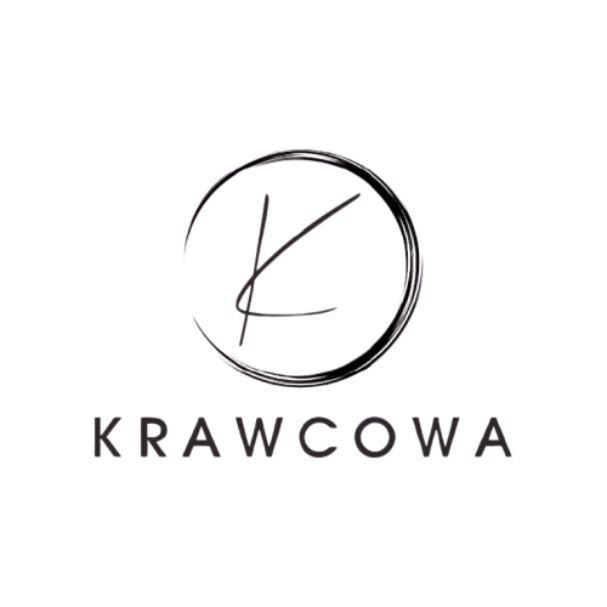

Przeróbki odzieży
Zwężanie, skracanie i dopasowywanie ubrań do Twojej sylwetki. Poprawiam również zameczki, guziki i podszewki.

Odwiedź moją pracownię
ul. Metalowa 6
70-001 Szczecin
Telefon: 739 165 627
Poniedziałek – Piątek: do 16:30
Co mogę dla Ciebie zrobić?
Dbam o to, aby każda rzecz dobrze leżała i służyła przez lata. Wycena jest zawsze indywidualna i zależy od rodzaju materiału oraz zakresu pracy.
Zwężanie, skracanie i dopasowywanie ubrań do Twojej sylwetki. Poprawiam również zameczki, guziki i podszewki.
Tworzę wyjątkowe ubrania od pierwszego pomiaru po ostatnie wykończenie, zgodnie z Twoim pomysłem i stylem.
Przywracam ulubionym ubraniom dobry wygląd. Naprawiam rozdarcia, przetarcia oraz wykonuję staranne poprawki.
Zobacz wybrane prace wykonane w naszej pracowni.
Nazywam się Anna i od ponad 10 lat zajmuję się krawiectwem. W mojej pracowni łączę precyzję, doświadczenie i szacunek do każdej rzeczy, która trafia w moje ręce.
Największą satysfakcję daje mi nadawanie ubraniom drugiego życia oraz tworzenie projektów, w których klient czuje się naprawdę sobą. Zawsze zaczynam od rozmowy, dokładnych pomiarów i poznania Twoich potrzeb.
Pracuję starannie, w spokojnej atmosferze i dbam o estetykę każdego detalu.
Podane ceny nie zawierają użytków dodatkowych (suwak, guma itp.)
W przypadku zleceń nietypowych lub nieujętych w cenniku ceny ustalane są indywidualnie.
Najczęściej od 3 do 7 dni roboczych. Dokładny termin ustalam podczas przyjęcia ubrania.
Tak. Chętnie pracuję na materiałach klienta i przed rozpoczęciem oceniam, czy nadają się do wybranego projektu.
Warto przynieść buty lub dodatki, z którymi ubranie będzie noszone. Na miejscu wykonamy pomiary i omówimy szczegóły.
Wycena zależy od rodzaju ubrania, materiału i zakresu pracy. Podaję ją przed rozpoczęciem realizacji.
Zapraszam do kontaktu, aby omówić Twój pomysł lub umówić przymiarkę.
Pracownia Krawiecka Anna
ul. Szyciowa 12, 00-001 Warszawa
Telefon: +48 123 456 789
E-mail: kontakt@pracowniaanna.pl